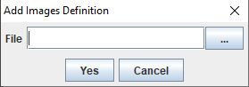
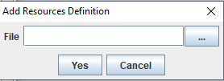
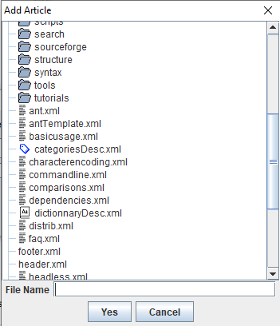

Home
Categories
Dictionary
Download
Project Details
Changes Log
What Links Here
How To
Syntax
FAQ
License
Adding an element in the Editor tree
1 Adding an article
2 Adding the index
3 Adding an Image definition file
4 Adding a Resource definition file
5 File selection chooser
6 See also
2 Adding the index
3 Adding an Image definition file
4 Adding a Resource definition file
5 File selection chooser
6 See also

The "Add After" or "Add Under" option in the Editor treeallows to add an element in the tree (respecting the structure of the file system).
You can add:
- Index article. Note that this options is only availabel is no index article exists in the Wiki
- articles, including regular articles, the index article, Template articles, redirect articles, or Disambiguation articles
- Image definition files
- Resource definition files
- Infobox definition files
- Menus
Adding an article

You can add several types of articles:
- "Article": a regular article
- "Template": a Template article, which can be included in other articles
- "Disambiguation": a Disambiguation article
- "Redirect": a Redirect article
- The file for the article (see File selection chooser for more information)
- The name of the article
- The article on which the article redirects for a Redirect article
Adding the index
A dialog for an Index article only allows to specify:
- The file for the article (see File selection chooser for more information)
- The article on which the article redirects for a Redirect article i the index redirects to another article
Adding an Image definition file

A dialog for an Image definition file only allows to specify:
- The file for the images defintion (see File selection chooser for more information)
Adding a Resource definition file

A dialog for an Resources definition file only allows to specify:
- The file for the resources defintion (see File selection chooser for more information)
File selection chooser
Selecting a file for an element in the tree uses a specific file chooser only allowing to specify a file name in the parent directory. For example:
See also
- DocGenerator editor: This article explains the DocGenerator editor
- Editing in the Editor tree: This article presents how to add or delete elements in the Editor tree
×

Categories: Editor | Gui